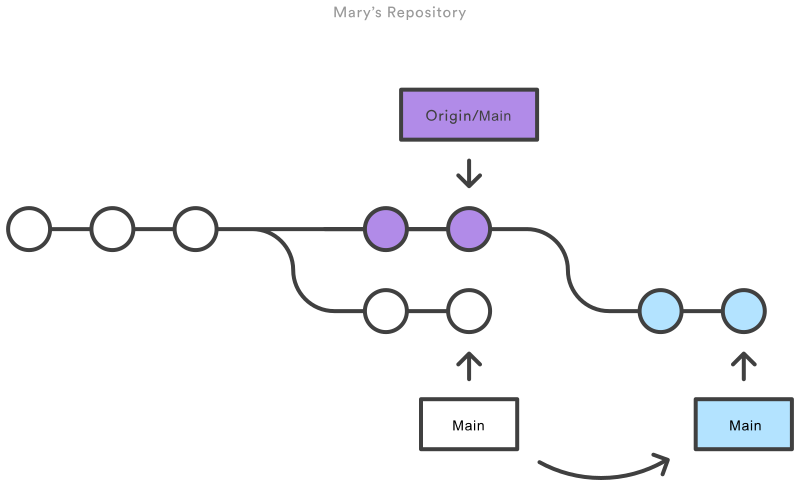
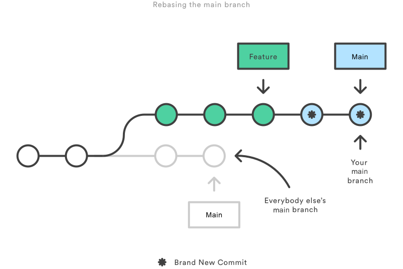

🥷 Git commands - ultimate cheat sheet 🥷
Cheat sheet for personal usage😅😅😅
Useful commands:
```
$ git commit -am "commit message"
- add + commit command
$ git fetch
- check if there some changes in branch
$ git diff filename
- check diff of files
$ git checkout -b feature4[new branch] develop[origin branch]
- creating a Branch from Another Origin Branch
$ git checkout -b 'new branch name' 'starting point (parent branch)'
$ git pull origin
Git push:
```
$ git push --set-upstream origin
```
$ git merge --squash feature/addnavbar
$ git commit -m "feat: my only one commit msg"
```
### What is rebase? Rebase is used to update ONLY feature branch with master(main). Squash multiple commits. !Reverting rebase would be very difficult!
```
$ git checkout feature/addnavbar
$ git rebase master
```
### Merge with squash? In this case we merge to master the feature banch changes and combine all feature branch's commits in one we need
```
$ git merge --squash feature/addnavbar
$ git commit -m "My only one commit msg"
```
### What is stash? We want to keep our changes in feature/fix branch without actually commiting it.
```
$ git stash
- command to stash all changes (STAGED ONE) |
$ git stash -u
- to include unstaged
$ git stash push -m "describe this changes"
- stash changes with message
$ git stash apply 1(1 is index)
-apply first stash changes without deleting
$ git stash pop 1
-apply stash changes to the branch
$ git stash list
-shows list of stash items
$ git stash drop 2
-delete stash item with index 2
$ git stash clear
-clear list of stash items
$ git stash show
-show differences or add -p to show all diffs
```
### How to revert last(you pick) commit from history?
#### Reseting:
```
$ git reset --soft HEAD~1
- this basically revert one last commit?
flags:
-soft flag not deleting all modified files in that commit
-hard will discard all changes made in commit
-mixed will remove files from git index but keep in directory
$ git reset --hard HEAD~1
- basically delete/remove last(or more) commit
$ git reset --hard origin/main
- gonna delete all local commits changes and pull all changes from remote branch main
$ git reset
- unstage all files but doesnt overwrite it
$ git reset "filename"
- unstage one file
$ git reset --hard
- unstage and overwrite all files (basically go back hard)
```
#### Reverting:
```
$ git revert HEAD
- a bit different method. In this case we add another commit where we saying that prev commit is reverted.
```
#### Amending:
Changing the last commit with --amend It lets you combine staged changes with the previous commit instead of creating an entirely new commit. It can also be used to simply edit the previous commit message without changing its snapshot.
```
$ git commit --amend -m "an updated commit message"
- basically just rewrite commit message for the last commit
```
REBASE:
### Rebase itself has 2 main modes: "manual" and "interactive" mode.
#### Manual rebase:
```
$ git rebase
REFLOG:
### What is reflog? Reflogs track when Git refs were updated in the local repository. Reflog basically show all local activities. ``` $ git reflog - shows all commits $ git branch "our branch" "hash of commit" - here we can bring back our deleted commit $ git diff main@{0} main@{1.day.ago} - diff the current main branch against main 1 day ago ```
USEFUL LOGS:
``` $ git log --oneline - check commit history $ git log --oneline --graph --decorate $ git log --oneline --stat --- show nice logs with files that have been modified ``` ### What if we need to search specific commits where someone changed specific files? Basically we can find by author or by file ``` $ git log -- "FILENAME" $ git log --author="NAME" $ git log --pretty=format:"%h%x09%an%x09%ad%x09%s" - the best logs with author and date ``` ### Realize you forgot to add the changes from main.py ``` $ git add main.py $ git commit --amend --no-edit $ git commit --amend lets you take the most recent commit and add new staged changes to it ```
GIT CLEAN:
### To remove untracked files use git clean: ``` $ git clean -n - will show which files are going be removed $ git clean -f - actually remove delete these files ```
REWRITING HISTORY:
### Amending commits:
In case you forgot to commit something. Instead of making another commit you can just do commit with --amend:
````
$ git add .
$ git commit --amend --no-edit
````
Here we basically add/stage what we forgot to add and commiting it with last commit without any message (--no-edit flag).
### Rewording commits:
In case we want to rename for example last commit we can do it either with --amend for last commit or interactive rebase:
````
$ git log --oneline
$ git rebase -i HEAD~2 ---- rebasing last two commits
````
Then with VIM you should reword commits and close VIM editor.
### Deleting commits:
Basically with interactive rebase you can delete (drop) commits.
````
$ git log --oneline
$ git rebase -i HEAD~3
````
And then in editor window you can add "drop" in front of the commit you want to delete.
You can reorder commits with interactive rebase by simply reorder commits in editor window
### Squashing commits:
There is couple of options to squash commits. But here I would like to use interactive rebase with fixup command.
````
$ git log --oneline
$ git rebase -i HEAD~3
````
And in the editor VIM window you simple add before squashed commits "fixup" word and that commits are going to be squashed to the last commit.
### What is cherry-pick? it basically allows you to select individual commits to be integrated. In case you commited in wrong branch and want that commit in another one.
```
$ git cherry-pick "hash of commit"
- pick specific commit to your branch
```
GIT BRANCHE NAMING:
### REGULAR BRANCHES: - master --- master stable branch - dev --- development branch - qa --- contains all the code for testing ### TEMPORARY BRANCHES: - Bug fix - Hot fix - Feature branch - WIP ### EXAMPLE: - wip-8712-add-testing-module - bug-logo-alignment-issue ## **_GIT ADDITIONAL USEFUL COMMANDS:_**
- git clone -branch new_feature git://remoterepository.git ---- clone specific branch of repo - git diff main new_branch ./diff_test.txt --- To compare a specific file across branches, pass in the path of the file as the third argument to git diff - git stash branch add-stylesheet stash@{1} --- basically create a new branch from stash 1 - git tag -a v1.0 "commit" -m "My msg" --- creating tag for specific commit - git tag --- list of tags | by tag you can push it to origin - git blame README.md --- show who was chaneging this README file and when and basically first line of the content.
CHECKOUT STARTEGY TO UNDO SOMETHING:
### In case we have 3 commits: 1-bad 2-good 3-good ### What we do: ``` $ git log --oneline $ git checkout GOODCOMMITHASH $ git checkout -b "new branch with good commit where its last one" ``` ## **_COLLABORATING:_** ### When you file a pull request, all you’re doing is requesting that another developer (e.g., the project maintainer) pulls a branch from your repository into their repository.
### The general process of the pull requests is as follows: - A developer creates the feature in a dedicated branch in their local repo. - The developer pushes the branch to a public Bitbucket repository. - The developer files a pull request via Bitbucket. - The rest of the team reviews the code, discusses it, and alters it. - The project maintainer merges the feature into the official repository and closes the pull request.
### A branch represents an independent line of development. Branches serve as an abstraction for the edit/stage/commit process. You can think of them as a way to request a brand new working directory, staging area, and project history. New commits are recorded in the history for the current branch, which results in a fork in the history of the project.
## Merging
### Fast-forward merge A fast-forward merge can occur when there is a linear path from the current branch tip to the target branch. Instead of “actually” merging the branches, all Git has to do to integrate the histories is move (i.e., “fast forward”) the current branch tip up to the target branch tip. This effectively combines the histories, since all of the commits reachable from the target branch are now available through the current one.
 ### Example:
```
# Start a new feature
git checkout -b new-feature main
# Edit some files
git add
### Example:
```
# Start a new feature
git checkout -b new-feature main
# Edit some files
git add ### 3-way merge The next example is very similar, but requires a 3-way merge because main progresses while the feature is in-progress. This is a common scenario for large features or when several developers are working on a project simultaneously. ```` Start a new feature git checkout -b new-feature main # Edit some files git add
WORKFLOWS:
### Centralized Workflow
Standard Git commit process: edit, stage, and commit.
The --rebase option tells Git to move all of Mary’s commits to the tip of the main branch after synchronising it with the changes from the central repository, as shown below:
````
$ git pull --rebase origin main
````

### Feature Workflow - THE BEST ONE
The Feature Branch Workflow assumes a central repository, and main represents the official project history. Instead of committing directly on their local main branch, developers create a new branch every time they start work on a new feature. Feature branches should have descriptive names, like animated-menu-items or issue-#1061. The idea is to give a clear, highly-focused purpose to each branch. Git makes no technical distinction between the main branch and feature branches, so developers can edit, stage, and commit changes to a feature branch.
Start with the main branch ```` $ git checkout main $ git fetch origin $ git reset --hard origin/main ```` This switches the repo to the main branch, pulls the latest commits and resets the repo's local copy of main to match the latest version. Pulling ```` $ git checkout main $ git pull $ git pull origin marys-feature $ git push ````
ADVANCED COMMANDS & TIPS:
Merging vs. Rebasing
CONCEPT:The first thing to understand about git rebase is that it solves the same problem as git merge. Both of these commands are designed to integrate changes from one branch into another branch—they just do it in very different ways. The golden rule of git rebase is to never use it on public branches.  The rebase moves all of the commits in main onto the tip of feature. The problem is that this only happened in your repository. All of the other developers are still working with the original main. Since rebasing results in brand new commits, Git will think that your main branch’s history has diverged from everybody else’s. The only way to synchronize the two main branches is to merge them back together, resulting in an extra merge commit and two sets of commits that contain the same changes (the original ones, and the ones from your rebased branch). Needless to say, this is a very confusing situation.